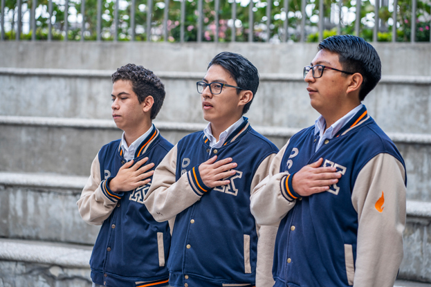
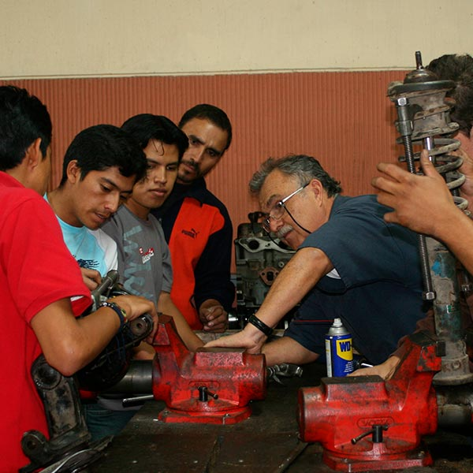
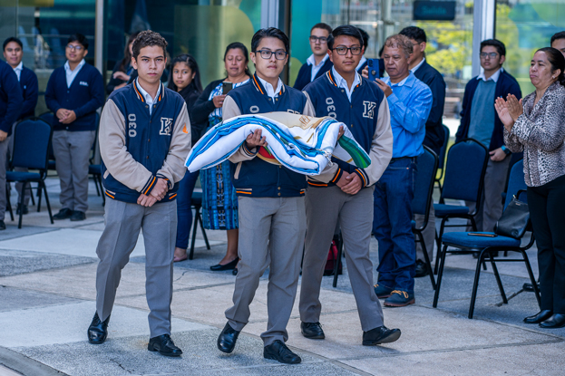
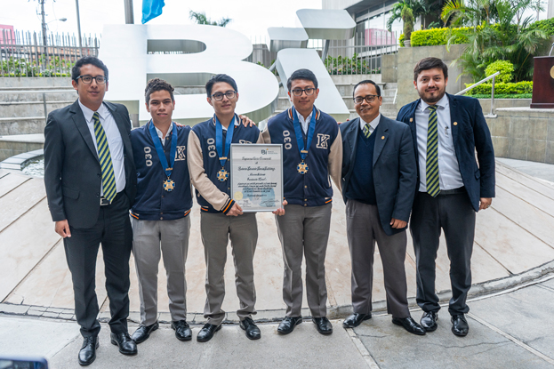
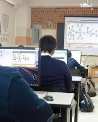

TU CAMINO AL ÉXITO ESTÁ EN KINAL
Kinal es un Centro Educativo privado, no lucrativo, dirigido a la formación técnica profesional de jóvenes y adultos, de beneficio colectivo y asistencia social en favor de los sectores más necesitados de la comunidad. Nuestro valor fundamental es enseñar a realizar el trabajo bien hecho, que sea la base de la superación de alumnos y el medio para servir a los demás.
NUESTROS PROGRAMAS
Formación técnica especializada para todas las edades

Educación Secundaria Inicial
Orientación técnica y excelencia académica para los más jóvenes. Formación integral con enfoque en valores.

Educación Diversificada
Preparación técnica y académica para el mundo laboral y universidad. Especialización en áreas técnicas.

Formación para Adultos
Más de 50 especialidades para potenciar tu crecimiento profesional. Cursos diseñados para el mercado laboral.
JÓVENES BENEFICIADOS (2024)
Transformando vidas a través de la educación técnica
GALERÍA DE FOTOS
Vive la experiencia Kinal a través de nuestras imágenes





